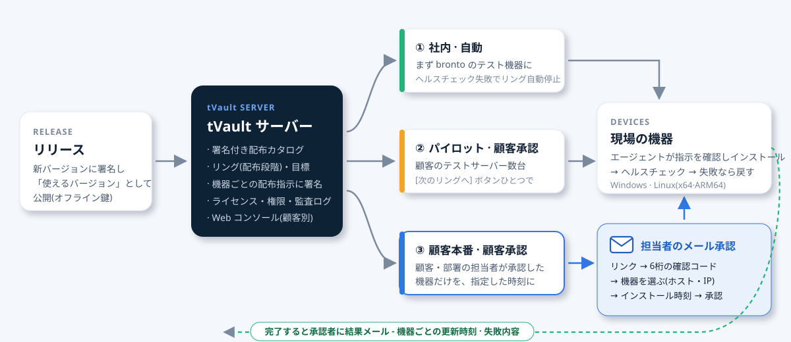

tVault
ソフトウェアのインストール・更新・ライセンスを一か所で。
新しいバージョンは署名して安全に公開し、顧客サーバーは顧客が承認した機器だけを指定した時刻に更新します。誰がどのバージョンを使っているか、ライセンスがいつ切れるかを顧客ごとにひと目で確認できます。

現場ソフトウェアのこんな悩みを解消します
現場サーバーと運用 PC が増えるほど、インストール・更新・ライセンス管理を人手でこなすのは難しくなります。
新しいバージョンを出すと、すべてのサーバーが一斉に変わってしまう
顧客の本番サーバーが業務時間中に突然再起動しては困ります。tVault はリング(配布段階)で社内 → パイロット → 顧客の順に広げ、顧客は承認した機器だけを更新します。
顧客ごとにリモート接続して手作業でインストールしている
インストールキーの入ったインストーラーをひとつ実行するだけで、登録・サービス・初回インストールまで完了します。その後の更新はエージェントが行い、失敗すれば自動で元に戻します。
誰が何を使っているか、ライセンスがいつ切れるかわからない
顧客・部署・ユーザー・機器ごとに権限(エディション・期間・期限切れ時の動作)を付与し、機器ごとの実際の適用権限とインストール済みバージョンをひとつの画面で確認します。
トライアルが終わっても使い続ける · コピーして使う
ライセンスは署名付きトークンと PC 固有の値で確認します。コピー・期間終了・回収はプログラム自身がブロックし、退職者の個人 PC には削除まで指示します。
更新したかどうかを電話で確認している
承認した機器がすべて完了すると、担当者に機器ごとの更新時刻を記した結果メールが届きます。電源の入っていない機器があれば、まず中間報告を送ります。
インターネットのない閉域網の現場
署名付きのバンドルファイルひとつで持ち込みます。検証手順はオンラインと同じで、オフライン期限内であればサーバーがなくてもライセンスが維持されます。
リリースと配布を分けます
リリースは「使えるバージョン」を公開すること、配布は「誰がいつ受け取るか」を決めることです。管理者がリングごとに目標バージョンを決め、[次のリングへ] を押して範囲を広げます。

リリース
ビルドしたパッケージをオフライン鍵で署名して公開します。この時点ではまだどの機器も変わりません。
リングの目標を決める
社内テスト機器のリングに新しいバージョンを設定します。インストール後の動作確認に失敗すると、そのリングは自動で停止します。
顧客の承認
顧客のリングに進めると担当者に承認メールが届きます。担当者は機器とインストール時刻を選んで承認します。
結果の確認
機器からの報告で結果を集め、承認者にメールで送り、Web コンソールに残します。
tVault の役割
顧客中心の Web コンソール NEW
左側のツリーで顧客(グループ)を選ぶと、その顧客の機器・ユーザー・権限・配布・メモがタブにまとまります。部署(下位グループ)まで含めて表示するので、顧客単位で業務を進めやすくなります。
- 顧客・部署ツリー - 折りたたみ・展開、名前検索、下位を含む機器数
- 概要: 機器・ユーザー数、製品ごとのバージョン分布、進行中の配布承認
- 機器タブ: 部署ごとにまとめ、ホスト名・IP・インストール済みバージョン・最終接続
- スクリプトを使わない画面 + 2段階認証(パスワード + OTP)

選択配布 - リング(配布段階) NEW
製品ごとに既定の動作を決めます。維持ならリングに指定された機器だけを更新し、追従なら新しいバージョンにすぐ追従します。リングには顧客・部署・ユーザー・機器を対象として入れ、目標バージョンと方式(自動 / 顧客承認)を決めます。
- 最も具体的な対象のリングに従う(機器 > ユーザー > 部署 > 顧客)
- [次のリングへ] ボタンひとつで段階を広げる
- リングの目標を古いバージョンに変えると、その機器だけが元に戻る
- インストール後の動作確認に失敗(ロールバック)するとリングを自動停止
- サーバーでもブロック - 目標以外のパッケージは配信しない

顧客担当者によるメール承認 NEW
顧客承認リングに新しいバージョンを設定すると、顧客(または部署)の承認担当者にメールが届きます。担当者はログインせずにリンクを開き、そのメールに届いた6桁の確認コードを入力したあと、更新する機器とインストール時刻を選んで承認または保留します。
- 機器の表: 部署ごとにまとめ、ホスト名 · IP · 機器名 · 現在のバージョン
- 機器ごとに選択、部署単位で除外 - 100台を超えても区別しやすい
- インストール時刻: 今すぐ、または日付・時刻(夜間作業時間)
- リンクは担当者ごとに個別、有効期限7日、一度決定したら終了
- 担当者がいない場合や電話で確認した場合は、管理者が備考を付けて代理承認

機器ごとの結果と結果メール NEW
承認した機器の更新がすべて完了すると、承認者にすぐ結果メールを送ります。機器ごとに以前 → 現在のバージョン、結果、更新時刻が記載されます。電源の入っていない機器があれば指定時間(既定1時間)後に中間報告を送り、すべて完了したら最終報告をあらためて送ります。
- 完了 · 失敗 · 進行中の数と失敗内容
- 同じリンクを再度開くと結果の表が表示される
- 管理者通知アドレスへ保留・期限切れ・結果のコピー
- 中間報告の時間・承認期限・再通知を設定で調整

ワンステップのインストール · 自動更新 · 自動ロールバック
ファイル名にインストールキーが入ったインストーラーを実行すると、機器登録、サービス登録、初回インストールまで完了します。その後はエージェントが10分ごとに署名を確認し、目標バージョンに合わせます。
- インストール → 動作確認(ヘルスチェック) → 失敗時は以前のバージョンへ自動ロールバック
- 保持するデータフォルダーは更新・削除時にも残す
- Windows: 通知領域アイコンから起動・終了・更新・削除
- ユーザーが選ぶ更新: 今すぐ・あとで・スキップ(必須バージョンはスキップ不可)
- 変更内容(リリースノート)を通知にそのまま表示

ライセンス · 権限
製品ごとにエディション(Basic · Pro など)と機能・役割を定義し、顧客・部署・ユーザー・機器に権限を付与します。権限は機器ごとに署名付きライセンストークンとして届き、プログラムが直接確認します。
- 期間: 永続 · サブスクリプション · 期間限定 · トライアル(承認が必要)
- 期限切れ時の動作: 継続(更新のみ停止) · エディションを下げる · 起動をブロック · 削除
- オフライン期限 - サーバーがなくなっても購入した分は使える
- PC 固有の値でコピーを見分ける · 回収は失効リストで
- 退職処理: 権限の回収、会社の機器は共用に、個人の機器には削除を指示

すべての作業に備考 · 監査ログ NEW
回収・機器の無効化・配布目標・代理承認のように、元に戻しにくい作業や顧客に影響する作業には必ず備考(理由・依頼者・連絡内容)を残します。顧客画面のメモ・履歴タブで、メモと作業記録をひと目で確認できます。
- 顧客メモ - 通話・訪問・約束の内容
- ハッシュチェーンの監査ログ - あとから改ざんできない
- 承認リクエスト: 決定した人・メール・IP・選んだ機器・インストール時刻

署名で守る配布
更新経路を狙う攻撃に備え、役割ごとの鍵で署名します。機器は最初に受け取った信頼の起点(root)だけを信頼し、サーバーのアドレスが変わっても署名がなければ何もインストールしません。
- リリース鍵はサーバーの外(オフライン)に - サーバーが侵害されても偽のパッケージは不可能
- パッケージの長さ・ハッシュを確認、古いカタログに戻す攻撃を防止
- 機器ごとの配布指示も署名 - 署名済みのバージョンの中からのみ選択
- 機器の鍵で署名したリクエストだけを受け付ける · 紛失した機器は無効化

インターネットトライアル · メール送信内蔵 NEW
Web サイトの [無料トライアル] ボタンひとつで、申し込み → メール認証 → 自動承認 → 個人用インストールキーまで、人手を介さずに開通します。トライアルポリシー(エディション・日数)が承認の代わりとなり、監査ログに残ります。メールは外部サービスを使わず tVault サーバーが直接送信します。
- ファイル名にインストールキーが入ったインストーラー - お客様はダウンロードして実行するだけ、PC 1台・7日以内にインストール
- 同じメールアドレス・同じ PC からの繰り返し申し込みをブロック、メール・ドメイン・PC のブロックリスト
- 終了3日前・最終日のメールとプログラム内通知 · 終了するとブロック
- トライアル画面: 状態ごとの件数、流入経路・インストール PC・マーケティング受信で検索、正式版への切替・回収・期間調整
- メール送信内蔵(DKIM 署名) - テスト・案内メール、広告メールは受信に同意した人だけに (広告) 表示・配信停止リンク付き

状況表 · 2人承認 · 管理ツール NEW
顧客 → 部署 → ユーザー → 機器をひとつの表に展開し、製品ごとのインストール済みバージョンと更新状態(最新・待機・保留・失敗)を確認します。元に戻しにくい作業は、作業の種類ごとに別の管理者の承認を必須にできます。
- 状況表: グループのみ · ユーザーまで · 機器まで、セルごとに目標が決まった理由、権限をその場で修正
- 2人承認: トライアル・期間限定の権限、完全削除、監査ログの削除、管理者アカウント
- グループ構成図: ドラッグで移動(下位を含む)・名前の変更・複数グループの一括作成
- 一覧 → 詳細(閲覧のみ → [編集])画面、Web から CLI コマンドを実行、一括削除
- モバイルアプリ(APK)の登録・署名確認・バージョン管理と Web からのダウンロード

その他の画面
すべてデモデータで撮影した実際の画面です。クリックすると拡大します。tVault Web コンソールは現在、韓国語で提供しています。


スマートフォンでも
Web コンソールと承認画面はスマートフォンの画面幅に合わせて表示されます。Web コンソールはホーム画面にアプリとしてインストール(PWA)でき、承認リクエスト・配布保留・新しいトライアル・インストール失敗をプッシュ通知ですぐに受け取れます。出張中でも承認し、結果を確認できます。


構成と対応環境
| tVault サーバー | Linux · PostgreSQL(既定)または SQLite(小規模納品向け) · パッケージはファイルストレージ · メール送信内蔵(DKIM 署名) |
|---|---|
| エージェント | Windows(サービス + 通知領域アイコン) · Linux x64 · ARM64(systemd) · エージェント自身も更新 |
| Web コンソール | 顧客ツリー・タブ、状況表、配布・承認・権限・機器・トライアル・メール・監査ログ · 2人承認 · コマンド実行 · パスワード + OTP の2段階認証 · スマートフォンにアプリとしてインストール(PWA)・プッシュ通知 |
| CLI | パッケージ作成・release(署名)・root 鍵の更新・バンドルの持ち込みなど、署名鍵が必要な作業は CLI でのみ |
| 配布 | 製品ごとの既定動作(維持・追従) · リング(対象・目標・自動/顧客承認・停止) · 機器ごとの署名付き配布指示 · サーバーでのダウンロード制御 |
| 顧客の承認 | 担当者ごとのメールリンク · 6桁の確認コード · 機器ごとの選択(ホスト名・IP) · インストール時刻 · 結果メール(中間・最終) |
| ライセンス | エディション・機能・役割 · 永続・サブスクリプション・期間限定・トライアル · 期限切れ時の動作 · オフライン期限 · PC 固有の値 · 失効リスト |
| インストール経路 | インストールキーのリンク → インストーラーの実行 → 登録・サービス・初回インストール · 閉域網は署名付きバンドルファイル |
| インターネットトライアル | 公開申し込み画面 · メール認証 · ポリシーによる自動承認 · 個人用インストールキー(PC 1台) · 繰り返し申し込み・ブロック · 終了予告メール · 正式版への切替・回収 |
| モバイルアプリ | Android APK の登録・署名(v2・v3)確認・バージョン管理・Web からのダウンロード · アプリがインストールキーで登録しスマートフォン専用ライセンス |
| 連携製品 | tOps(brontod · tdoctor)の配布と tdoctor Basic/Pro ライセンス · 顧客のサーバーへの納品(顧客自身のサーバー)も可能 |
よくある質問
新しいバージョンを公開すると、顧客サーバーはすぐに変わりますか?
いいえ。製品の既定動作が「維持」なら、リングに指定された機器だけが変わります。顧客承認リングでは、担当者が承認した機器だけが指定した時刻から変わります。
担当者のメールが別の人に転送されたら?
リンクだけでは決定できません。リンクを受け取ったメールアドレスに6桁の確認コードを送り、そのコードを入力して初めて決定画面が開きます。担当者から外れたアドレスのリンクはブロックされます。
更新中に問題が起きたら?
インストール後の動作確認に失敗すると、機器が自ら以前のバージョンに戻り、そのリングを自動で停止して他の機器に広がらないようにします。管理者が原因を確認したあと、備考を残して再開します。
インターネットが使えない現場でも使えますか?
はい。署名付きのバンドルファイルで持ち込み、ライセンスはオフライン期限内であればサーバーなしで維持されます。顧客の社内に tVault サーバーを別途置く納品構成もあります。
Web サイトからトライアルを自動で開通できますか?
はい。製品ごとにトライアルポリシー(エディション・日数・オフライン期限)を決め、Web サイトのボタンを申し込み画面にリンクすれば、申し込み → メール認証 → インストーラーまで自動で進みます。人はトライアル画面で正式版への切替・回収を行うだけです。bronto の tdoctor トライアルもこの仕組みで運用しています。
tOps や tems なしで tVault だけを使えますか?
はい。マニフェスト(インストール場所・サービスコマンド・動作確認方法)さえあれば、どんなプログラムでも tVault で配布・更新・ライセンス管理ができます。
配布とライセンスを、これからは一か所で
現場の数と運用方法をお知らせいただければ、実際の画面で運用の流れをご紹介します。